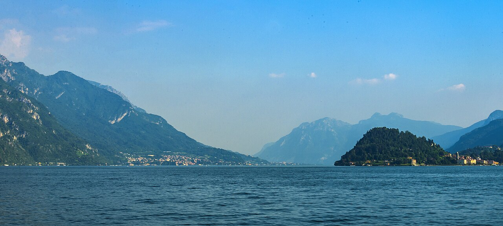

Lake Como · 5-day family itinerary
Four nights in Como, a Brunate funicular buffer day, then Navigazione Laghi boats to Bellagio, Varenna and Villa Carlotta — with the day ticket treated as a boarding plan, not a last-boat guarantee.

Photo: Daniel Case, Bellagio and Lake Como from Menaggio-Varenna ferry, CC BY-SA 3.0, via Wikimedia Commons.

Checked before you commit
This illustrative route keeps one base in Como for four nights and uses the lake boats for the mid-lake days. Trenord’s Milano Centrale to Como San Giovanni link, ATM’s Como–Brunate funicular, Navigazione Laghi’s free-circulation ticket rules, Villa Melzi, Castello di Vezio and Villa Carlotta hours were checked against official pages on 16 October 2026. Nothing was booked.
Train into Como first, so arrival day does not depend on a boat. The Brunate funicular sits on Day 2 as a short vertical buffer. Days 3–5 use Navigazione Laghi for Bellagio, the Bellagio–Varenna–Menaggio ferry triangle and Villa Carlotta, then the train back toward Milan.
One main anchor a day for a primary-school child and a younger sibling: Brunate, Villa Melzi, Castello di Vezio, Villa Carlotta. Afternoons stay loose, and every boat day writes a last-return time on the card before you leave the dock.
Flights, hotels and ferry tickets were not checked for your dates. A free-circulation day ticket is not a reserved seat. A booking-hub link is intent only. It doesn’t hold a place on a full boat.
Planning boundary: dates are illustrative. The worked example runs Monday 10 to Friday 14 May 2027, inside the published garden and castle seasons. Ferry timetables change by season, so reopen the current Navigazione Laghi PDF before you travel. Alfred does not check boat capacity, last departures or weather suspensions while it writes the day. Book opens a partner checkout. It does not prove a booking exists. Lake Como is not one of the destination guides in the signed-in app.
Route and family-coordination brief
Party: two adults, one primary-school child and one younger child. Base: four nights in Como near the waterfront and boat piers. Pace: moderate, one anchor a day. Budget input: Mid Range. Published attraction prices appear only where an official page states them; ferry fares are not totalled here.
Getting there: Trenord says Milano Centrale to Como San Giovanni takes about 40 minutes on a direct service with roughly hourly departures. Buy the ticket before you board. From the station, walk or take a short local ride to a hotel near the lake so Day 1 does not need a boat.
Getting around the lake: Navigazione Laghi runs the public boats and ferries. Its English tickets page asks travellers to reach the ticket office about 20 minutes before departure, notes that more than one boat can sit at a dock, and says routes may be suspended in bad weather or strong waves. Timetable PDFs print that places are limited to each boat’s maximum capacity. The operator’s English fares sheet (valid from 1 April 2026) describes free-circulation day tickets as personal, non-transferable tickets for unlimited trips between the ports they cover, including intermediate stops, while the ticket is valid. Fast services need a supplement. The same sheet says a traveller may request a refund when there is no room or embarkation is not possible. Write the last return you need on the day card before you leave Como.
Garden and castle clocks: Villa Melzi’s gardens list peak hours of 10.00 am to 7.00 pm with last admission at 6.30 pm, no reservation required, and free entry for children up to 11; the villa itself is private and closed to visitors. Castello di Vezio, above Varenna in Perledo, lists May weekday hours of 10.00 am to 6.00 pm, with last access 20 minutes before closing. Villa Carlotta in Tremezzina lists 20 March to 18 October 2026 hours of 10.00 am to 7.00 pm, last ticket at 6.00 pm and museum close at 6.30 pm, with a boat stop at Tremezzo–Villa Carlotta about 400 metres from the entrance.
Day 1 — Train into Como and keep the evening car-free
Arrive in Milan and ride Trenord from Milano Centrale to Como San Giovanni. The operator puts the journey at about 40 minutes on a direct train. Check in near the waterfront so tomorrow’s funicular and the boat piers are a short walk, not a transfer hunt with luggage.
Keep the evening light: a lakeside stroll and an early dinner. No Navigazione Laghi ticket is required today, which means Day 1 does not fail if a boat is full or cancelled.
Fallback: if the flight into Milan lands late, take the next workable Trenord departure and skip the evening walk. The buffer sits on Day 2.
Live-check: Trenord’s current timetable and ticket rules for your date; hotel distance to Piazza Cavour / the boat piers; whether you need a metro or taxi from the airport into Milano Centrale.
Day 2 — Brunate funicular as the short vertical buffer
Walk to the Como–Brunate funicular station in Piazza Alcide De Gasperi. ATM says service runs from 6.00 am to midnight, the ride takes seven minutes, and departures leave Como and Brunate at the same times. Ride up for the lake view, keep the stop short for young children, then come back down for a quiet afternoon in Como.
Use the afternoon to confirm tomorrow’s boat plan: which free-circulation zone you need, which Bellagio departure you want in the morning, and which return to Como you will treat as the hard stop.
Fallback: if the funicular is disrupted, stay on the waterfront promenade and keep Day 2 boat-free. Do not add a long mid-lake hop on the same day as arrival fatigue.
Live-check: ATM’s current funicular notices (the English page can carry strike or service alerts); weather for an exposed viewpoint; Io Viaggio ticket validity if you already hold a regional pass.
Day 3 — Bellagio by boat and Villa Melzi gardens
Buy a Navigazione Laghi free-circulation day ticket that covers Como and Bellagio for your date, and arrive at the ticket office about 20 minutes before the departure you want. At the dock, follow staff directions — more than one boat can be waiting. Ride an ordinary boat service to Bellagio rather than stacking optional stops on the way out.
Walk to the Giardini di Villa Melzi. The gardens’ site lists peak opening of 10.00 am to 7.00 pm with last admission at 6.30 pm, tickets sold at the gate with no reservation, free entry for children up to 11, and no access to the private villa. Keep the visit to the garden paths, chapel and museum spaces the ticket covers, then return to the Bellagio pier with enough margin for the last Como-bound boat you wrote on the card.
Fallback: if the morning boat is full, wait for the next ordinary departure or shorten the garden visit. If weather suspends the service, stay in Como and move Bellagio to Day 4.
Live-check: the current Navigazione Laghi timetable PDF for your season; whether your ticket zone matches the ports you will use; Villa Melzi’s autumn shortened hours if you move the dates later; the exact last return to Como.
Day 4 — Mid-lake ferry triangle and Castello di Vezio
Use another free-circulation day (or continue with a multi-day pass if you bought one) to reach the mid-lake ferry triangle: Bellagio, Varenna, Menaggio and Cadenabbia. Navigazione Laghi publishes separate weekday and Sunday/holiday ferry sheets for that crossing. Aim for Varenna in the late morning so the climb to Castello di Vezio is not the last thing before a tight boat.
Castello di Vezio sits above Varenna in Perledo. For May, the castle lists weekday hours of 10.00 am to 6.00 pm, with last access 20 minutes before closing, and no reservation required. Keep the visit shorter than the garden day, then ferry back toward Como with the last-return minute already chosen.
Fallback: if the castle is closed or the climb is too much, stay on the Varenna waterfront and treat the ferry triangle itself as the anchor. If boats are disrupted, do not try to replace the day with a long lakeside drive unless you already hold the right driving documents.
Live-check: the ferry weekday vs holiday sheet; castle hours for your month; weather (November listings note rain closures; other months still need a live check); walking surfaces between Varenna pier and the castle.
Day 5 — Villa Carlotta, then the train toward Milan
Take a morning boat to the Tremezzo–Villa Carlotta stop. Villa Carlotta’s visit page puts the pier about 400 metres from the entrance and, for 20 March to 18 October, lists opening from 10.00 am to 7.00 pm with last ticket at 6.00 pm and museum close at 6.30 pm. For a departure day, arrive at opening, keep the visit shorter than a full garden afternoon, and be back in Como with a clear buffer before your Trenord train to Milano Centrale.
If your flight leaves Milan the same evening, protect the train time the way yesterday’s card protected the last boat. Do not let the villa’s last-ticket time become your planning horizon on a travel day.
Fallback: if the morning boat fails or queues are long, skip the villa and use the morning for luggage and the train. Villa Carlotta is the flexible anchor; the Milan connection is not.
Live-check: Villa Carlotta’s hours for your exact date (autumn and winter special calendars differ); boat times Como–Tremezzo; Trenord departure to Milano Centrale; airport transfer from Milan.
Planning notes
Dates are illustrative. At decision time, recheck Trenord and ATM notices, the current Navigazione Laghi timetable and free-circulation zone for your ports, Villa Melzi, Castello di Vezio and Villa Carlotta hours, and weather that can suspend boats. A travelling profile is required. On web Lets Go, Holiday takes origin, destination, dates, a budget step and a day pace, then Plan my trip queues the itinerary. Moderate day pace fills a morning and an afternoon slot, with lunch and dinner. The Estimated costs bar, when it appears, is a rounded median of flight-and-hotel packages, not a quote. While the trip is still Planning, you can keep or change the hotel and then the flights Alfred picked. Holiday takes one destination, so mid-lake days stay as day cards under a Como base unless you rebuild the route in Multi-city with cities picked from city search. Once the trip is ACTIVE, it can be viewed, edited and shared. You can edit an item’s title, times and notes, so “Free-circulation zone X; last Como boat 17:40; ticket office 20 minutes early” can sit on the card itself. Book opens a partner checkout for flights and hotels, activities, eSIMs and travel insurance. It doesn’t reserve a boat seat. Lake Como is not one of the destination guides in the signed-in app.
Plan a trip
Start with your people, dates and pace, then review the editable plan before booking.
Plan a trip